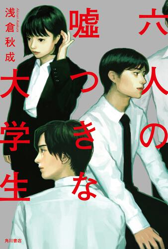

site_Name
site_Name
novel ランキング
【第1位】 六人の嘘つきな大学生
角川書店 著者：浅倉秋成
"「犯人」が死んだ時、すべての動機が明かされる――新世代の青春ミステリ！"
人気IT企業スピラリンクスの最終選考はグループディスカッションだった。最後に残った六人の大学生は、ディスカッションのテーマを知り驚愕する。会議室という密室の中で繰り広げられる心理戦。突如として出現する六通の告発文。犯人は誰なのか。採用を勝ち取るのは誰なのか。そして明かされる、犯人の真の狙いとは？
【第2位】 ナヤミ雑貨店の奇蹟
角川文庫 著者：東野圭吾
"東野圭吾史上、最も泣ける感動作"
悪事を働いた３人が逃げ込んだ古い家。そこはかつて悩み相談を請け負っていた雑貨店だった。廃業しているはずの店内に、突然シャッターの郵便口から悩み相談の手紙が落ちてきた。時空を超えて過去から投函されてのか？
３人は戸惑いながらも当時の店主・波矢雄治に代わって返事を書くが・・・。次第に明らかになる雑貨店の秘密と、ある児童養護施設との関係。悩める人々を救ってきた雑貨店は、最後に再び奇蹟を起こせるか！？
【第3位】 君の膵臓をたべたい
双葉社 著者：住野よる

“ラスト、きっと このタイトルに涙する。”
ある日、高校生の僕は病院で１冊の文庫本を拾う。タイトルは「共病文庫」。それは、クラスメイトである山内桜良が密かに綴っていた日記帳だった。そこには、彼女の余命が膵臓の病気により、もういくばくもないと書かれていた。こうして、偶然にも【ただのクラスメイト】から【秘密を知るクラスメイト】となった僕。まるで自分とは正反対の彼女に、僕は徐々にひかれていった。だが、世界は病を患った彼女にさえ、平等に残酷な現実をつきつける――。全ての予想を裏切る結末まで、一気読み必至！